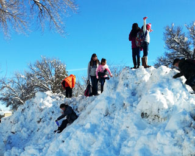
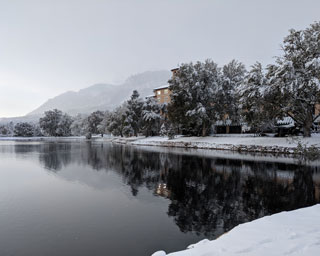
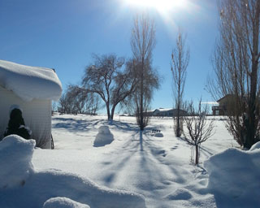
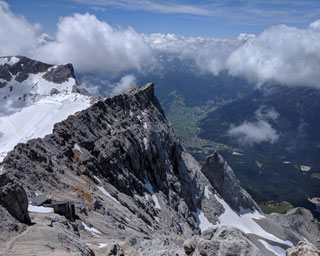
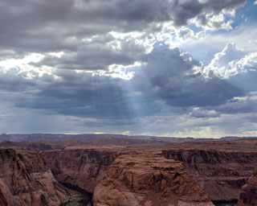

A group of children climb a snowpile on a cold sunny afternoon.>

Looking across the pond at new fallen snow in October.

Fresh snow glistens outside a home on a sunny winter day.

Snow covered mountain peaks on a partly cloudy day.

Sun streams through clouds over Horseshoe Bend